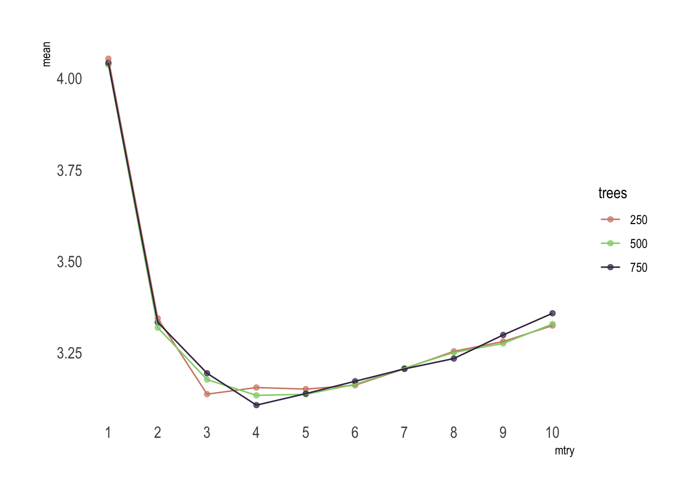
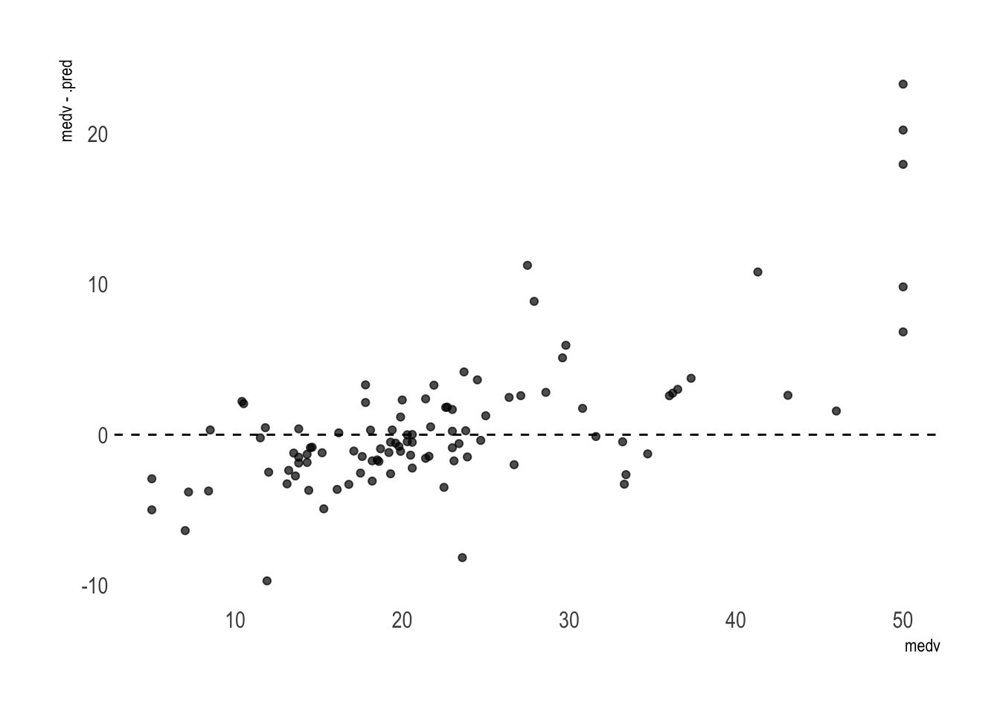
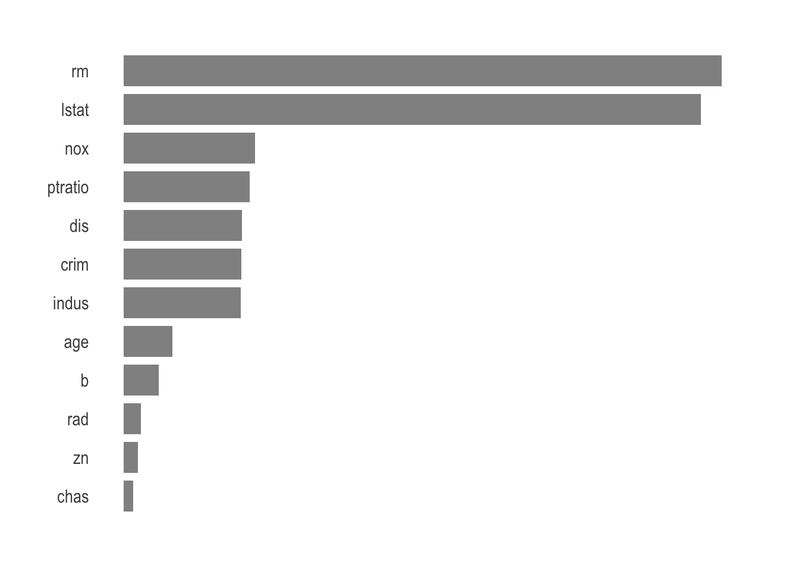

Did your mind ever paced back and forth and your eyes gazed blankly at the screen as you anxiously asked yourself: –how can so many different pieces fit together? –can it be uniform enough for all the models? –what about the many parameters to play with? –how to keep everything in line in a workflow? If you are modeling, this is a familiar image and your heart probably begins to pound violently as you anxiously play this scenario in your head.
After maturing for a few years, with snippets of it being released as they were developed, tidymodels is finally there. Similarly to the tidyverse, you can load the entire tidymodels suite of packages by typing library(tidymodels). And similarly to the tidyverse, it’s a complete toolbox whether you’ve decided to try out a full party of models or spend a quiet night alone fine tuning your favorite one. Let’s dive into it using the Boston housing dataset.
Your first day as an estate agent
The data lives, among many other famous datasets, in the mlbench package.
data(BostonHousing)In this post, I want to go over some general guidelines to consider when building a machine learning workflow. But if you’re an estate agent, this is gold and can be used to build a pricing model for other houses in the area.
glimpse(BostonHousing)
## Rows: 506
## Columns: 14
## $ crim <dbl> 0.00632, 0.02731, 0.02729, 0.03237, 0.06905, 0.02985, 0.08829…
## $ zn <dbl> 18.0, 0.0, 0.0, 0.0, 0.0, 0.0, 12.5, 12.5, 12.5, 12.5, 12.5, …
## $ indus <dbl> 2.31, 7.07, 7.07, 2.18, 2.18, 2.18, 7.87, 7.87, 7.87, 7.87, 7…
## $ chas <fct> 0, 0, 0, 0, 0, 0, 0, 0, 0, 0, 0, 0, 0, 0, 0, 0, 0, 0, 0, 0, 0…
## $ nox <dbl> 0.538, 0.469, 0.469, 0.458, 0.458, 0.458, 0.524, 0.524, 0.524…
## $ rm <dbl> 6.575, 6.421, 7.185, 6.998, 7.147, 6.430, 6.012, 6.172, 5.631…
## $ age <dbl> 65.2, 78.9, 61.1, 45.8, 54.2, 58.7, 66.6, 96.1, 100.0, 85.9, …
## $ dis <dbl> 4.0900, 4.9671, 4.9671, 6.0622, 6.0622, 6.0622, 5.5605, 5.950…
## $ rad <dbl> 1, 2, 2, 3, 3, 3, 5, 5, 5, 5, 5, 5, 5, 4, 4, 4, 4, 4, 4, 4, 4…
## $ tax <dbl> 296, 242, 242, 222, 222, 222, 311, 311, 311, 311, 311, 311, 3…
## $ ptratio <dbl> 15.3, 17.8, 17.8, 18.7, 18.7, 18.7, 15.2, 15.2, 15.2, 15.2, 1…
## $ b <dbl> 396.90, 396.90, 392.83, 394.63, 396.90, 394.12, 395.60, 396.9…
## $ lstat <dbl> 4.98, 9.14, 4.03, 2.94, 5.33, 5.21, 12.43, 19.15, 29.93, 17.1…
## $ medv <dbl> 24.0, 21.6, 34.7, 33.4, 36.2, 28.7, 22.9, 27.1, 16.5, 18.9, 1…crimper capita crime rate by townznproportion of residential land zoned for lots over 25,000 sq. ftindusproportion of non-retail business acres per townchasCharles River dummy variable (= 1 if tract bounds river; 0 otherwise)noxnitric oxide concentration (parts per 10 million)rmaverage number of rooms per dwellingageproportion of owner-occupied units built prior to 1940disweighted distances to five Boston employment centersradindex of accessibility to radial highwaystaxfull-value property tax rate per $10,000ptratiopupil-teacher ratio by townbproxi for proportion of African American by townlstatpercentage of lower status of the populationmedvmedian value of owner-occupied homes in $1000s
The prices of the house indicated by the variable medv is the target variable, and the remaining are the feature variables based on which we will predict the value of a house.
Let’s plant seed for reproducibility.
set.seed(42)It’s important to split the dataset into training and testing data. The data can be split using initial_split. I’ll use 80% for training, fit the model and tune its parameters, and set aside 20% for testing, when we will evaluate the model’s performance.
boston_split <- BostonHousing %>%
initial_split(prop = .8)We need to pull them both.
train_tbl <- training(boston_split)
test_tbl <- testing(boston_split)And we will want to cross-validate. vfold_cv helps to create a cross-validated version of the training set. Default is 10 partitions, which is great.
folds <- vfold_cv(train_tbl)The three questions
No matter what you’re dealing with, in real life most datasets aren’t provided ready to use. While working with mlbench you shouldn’t need to be prepared for the worst, but numeric aren’t neatly scaled or centered in their natural state and some might even be correlated.
rec_obj <- train_tbl %>%
recipe(medv ~ .) %>%
step_center(all_numeric(), -all_outcomes()) %>%
step_scale(all_numeric(), -all_outcomes()) %>%
step_corr(all_numeric(), -all_outcomes()) %>%
prep(data = train_tbl)We certainly want to review what will happen to the data.
rec_obj
## Data Recipe
##
## Inputs:
##
## role #variables
## outcome 1
## predictor 13
##
## Training data contained 405 data points and no missing data.
##
## Operations:
##
## Centering for crim, zn, indus, nox, rm, age, dis, rad, ... [trained]
## Scaling for crim, zn, indus, nox, rm, age, dis, rad, ... [trained]
## Correlation filter removed tax [trained]Turns out tax is above the default (.9) and will get discarded, whereas all other predictors will be directed to scaling and centering. juice can reveal this by extracting the pre-processed data.
rec_obj %>%
prep(train_tbl) %>%
juice()
## # A tibble: 405 x 13
## crim zn indus chas nox rm age dis rad ptratio b
## <dbl> <dbl> <dbl> <fct> <dbl> <dbl> <dbl> <dbl> <dbl> <dbl> <dbl>
## 1 -0.408 0.249 -1.25 0 -0.105 0.392 -0.0623 0.0998 -0.963 -1.44 0.432
## 2 -0.406 -0.514 -0.547 0 -0.702 0.171 0.420 0.517 -0.846 -0.269 0.432
## 3 -0.406 -0.514 -1.26 0 -0.797 0.184 -0.291 1.04 -0.729 0.153 0.402
## 4 -0.399 0.0157 -0.430 0 -0.226 -0.415 -0.0130 0.800 -0.495 -1.49 0.418
## 5 -0.392 0.0157 -0.430 0 -0.226 -0.186 1.03 0.986 -0.495 -1.49 0.432
## 6 -0.384 0.0157 -0.430 0 -0.226 -0.960 1.16 1.05 -0.495 -1.49 0.321
## 7 -0.389 0.0157 -0.430 0 -0.226 -0.426 0.666 1.29 -0.495 -1.49 0.322
## 8 -0.382 0.0157 -0.430 0 -0.226 0.108 0.962 1.17 -0.495 -1.49 0.384
## 9 -0.395 0.0157 -0.430 0 -0.226 -0.419 0.561 1.12 -0.495 -1.49 0.432
## 10 -0.398 0.0157 -0.430 0 -0.226 -0.591 -0.984 0.748 -0.495 -1.49 0.363
## # … with 395 more rows, and 2 more variables: lstat <dbl>, medv <dbl>Progressing through an analysis, you’ll no doubt have to choose a model. parsnip tries to remove the hurdles by providing similar interfaces to different models. If you go for a random forest and would like to adjust the number of trees there are different argument names to remember:
randomForest::randomForestusesntree,ranger::rangerusesnum.trees,- Spark’s
sparklyr::ml_random_forestusesnum_trees.
Which most conveniently becomes trees with parsnip. Here we are going to set the engine (set_engine) to ranger and tune mtry as well within set_args.
rf_model <- rand_forest() %>%
set_args(mtry = tune(), trees = tune()) %>%
set_engine("ranger", importance = "impurity") %>%
set_mode("regression") Establishing a workflow that encompasses the main stages of the process is a great way to ensure you keep on track and provide that extra healthy safety layer.
rf_workflow <- workflow() %>%
add_recipe(rec_obj) %>%
add_model(rf_model)Finally, there’s one last important step before fitting the model: tuning. Let’s specify in a grid the values we want to try for mtry and trees.
rf_grid <- expand.grid(mtry = 1:10,
trees = c(250, 500, 750))Time for the CPU do its magic. It will use the recipe and model we’ve been working on and tune_grid will compute a set of performance metrics (rmse and rsq) across 10 resamples of the data.
rf_tune <- rf_workflow %>%
tune_grid(resamples = folds,
grid = rf_grid,
metrics = metric_set(rmse, rsq))For the most curious mind collect_metrics extracts and formats the produced results. We can pipe this into a plot.
rf_tune %>%
collect_metrics() %>%
filter(.metric == "rmse") %>%
mutate_at("trees", as.factor) %>%
ggplot(aes(mtry, mean, color = trees)) +
geom_point(alpha = .7) +
geom_line() +
theme_ipsum() +
scale_color_ipsum() +
theme(panel.grid.major = element_blank(),
panel.grid.minor = element_blank()) +
scale_x_continuous(n.breaks = 10)
Or if you feel a bit lazy, you can use select_best() to find the tuning parameter combination with the best performance values.
rf_param <- rf_tune %>%
select_best(metric = "rmse")Build it on
How you answer all of these questions depends on your data, model, and the difficulty of the task, but now we’re ready to actually fit the final model. After determining the best parameters, finalize_workflow comes in handy to plug these parameters into the workflow.
rf_workflow <- rf_workflow %>%
finalize_workflow(rf_param)Finally, this complete workflow is injected with the full dataset via last_fit.
rf_fit <- rf_workflow %>%
last_fit(boston_split)This is absolutely right. Since we supplied the split object when we fitted the workflow, metrics will be evaluated on the test set only. Metrics and predictions are now close at hand.
rf_fit %>%
collect_metrics()
## # A tibble: 2 x 3
## .metric .estimator .estimate
## <chr> <chr> <dbl>
## 1 rmse standard 4.90
## 2 rsq standard 0.792rf_fit %>%
collect_predictions()
## # A tibble: 101 x 4
## id .pred .row medv
## <chr> <dbl> <int> <dbl>
## 1 train/test split 36.0 3 34.7
## 2 train/test split 36.0 4 33.4
## 3 train/test split 33.4 5 36.2
## 4 train/test split 21.0 16 19.9
## 5 train/test split 19.9 20 18.2
## 6 train/test split 15.4 24 14.5
## 7 train/test split 15.6 33 13.2
## 8 train/test split 14.7 35 13.5
## 9 train/test split 29.0 40 30.8
## 10 train/test split 18.1 49 14.4
## # … with 91 more rowsThese are obviously predictions made on the test set only as there are 101 rows total. The performance is very good, with a RMSE of 4.9 and Rsq of 0.79.
We can pipe this into ggplot2 to visualize the residuals.
rf_fit %>%
collect_predictions() %>%
ggplot(aes(medv, medv - .pred)) +
geom_point(alpha = .7) +
theme_ipsum() +
geom_abline(intercept = 0, slope = 0, linetype = "dashed") +
theme(panel.grid.major = element_blank(),
panel.grid.minor = element_blank())
Overall it’s good. But the model tends to somehow overprice the cheapest houses and clearly underprice the most luxurious properties. It would certainly help to collect more data on the lower and higher ends to further improve the result. Alternatively, we could filter out the most extreme cases to get a better estimation of how far off we are on average for the most common houses.
Wrap it up
Okay, once we’ve evaluated the model and are happy with predictions we definitively want to train it again, this time on the full dataset, to then use it and predict the values for new data. Well, we will fit, simply.
rf_fin <- rf_workflow %>%
fit(BostonHousing)Being able to explain the model to, let’s say the management team from bostonrealestate.com or the field agents, is primordial. Various elements from a workflow object can be extracted via workflow_extractors. Here we pull the fit.
rf_obj <- pull_workflow_fit(rf_fin)$fitAnd since a picture is worth a thousand words we can present the variable importance.
tibble(var = rf_obj$variable.importance,
nam = rf_obj$variable.importance %>% names(),
) %>%
ggplot(aes(var, reorder(nam, var))) +
geom_bar(stat = 'identity',
alpha = .7,
width = .8
) +
theme_ipsum() +
theme(panel.grid.major = element_blank(),
panel.grid.minor = element_blank(),
axis.title.x = element_blank(),
axis.title.y = element_blank(),
axis.text.x = element_blank()
)
The average number of rooms per dwelling and percentage of lower status of the population are the most important variables when it comes to predicting the price of a house in Boston.
Awesome, now you can simply go ahead with this random forest or set another engine within your workflow. It’s really up to you and so easy to change your mind. That’s really the most amazing part of a tidy workflow.